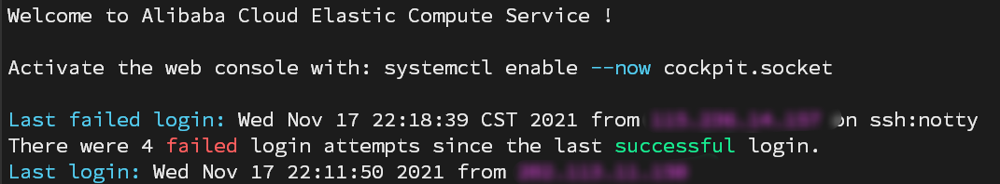
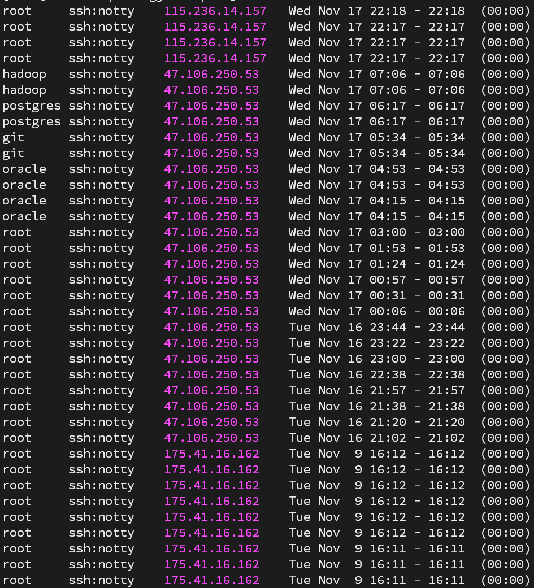
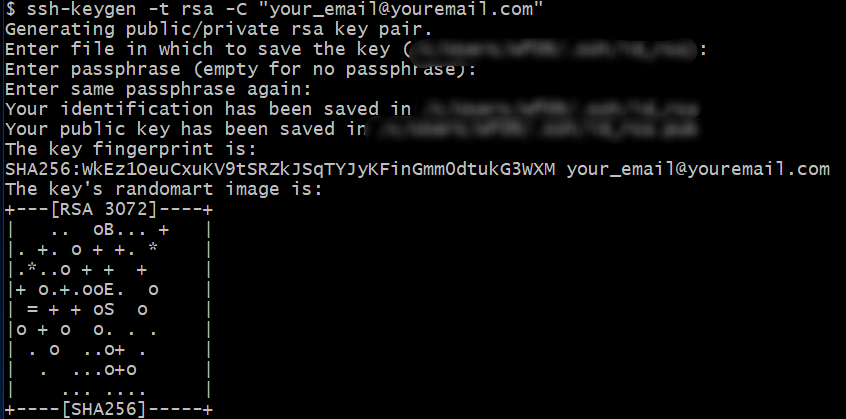
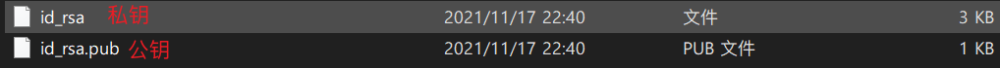
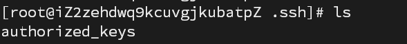
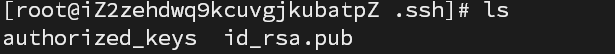
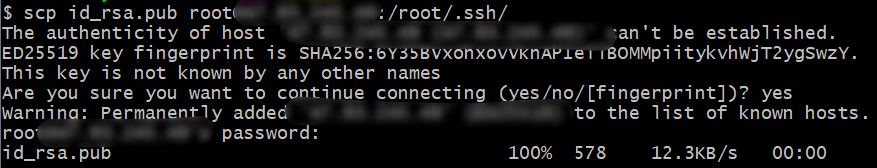

使用密钥登陆linux服务器
为什么使用ssh-key登录服务器？因为这种方法更安全，可以确保我们的服务器不被hack。
关键词：服务器安全
安全问题
在登录服务器时，发现了一行提示：

心中一惊，赶紧查看失败登录记录，果然发现了有很多被爆破的记录：
1 | lastb |

这让我意识到使用密码登陆服务器非常危险，于是乎便有了此文。
使用密钥登录ssh服务器
生成公钥和私钥
任意路径下打开git bash，输入以下命令，邮箱请根据自己的需要填写：
1 | ssh-keygen -t rsa -C "your_email@youremail.com" |

默认情况下会在自己的用户名下的.ssh文件夹生成公钥和私钥，其中.pub结尾的是公钥

将公钥拷贝到服务器
一般情况下，当前目录都会有.ssh文件夹，并且文件夹下有authorized_keys文件，此时只需要将公钥文件的内容复制到该文件即可：

若没有则需要新建
新建.ssh文件夹
使用当前用户并在当前用户名下新建.ssh文件夹
1 | mkdir .ssh |
使用xftp等软件拷贝
将id_rsa.pub文件拷贝到当前用户的.ssh文件夹下：

使用scp命令
1 | scp id_rsa.pub <用户名>@<ip>:<用户名>.ssh/ |

设置公钥权限
1 | chmod 600 id_rsa.pub |
修改ssh配置
1 | vim /etc/ssh/sshd_config |
找到对应的片段，修改后面的内容即可。
修改端口
1 | Port 65535 |
修改公钥文件地址
1 | AuthorizedKeysFile .ssh/id_rsa.pub |
允许公钥登录
1 | PubkeyAuthentication yes |
禁止密码登录
1 | PasswordAuthentication no |
重启SSH服务
1 | service sshd restart |
注意
到此以后就可以用密钥登陆了，不过现在还不能关闭当前的终端窗口，万一你刚才修改的有问题或者修改错了，那么就无法登陆服务器了！！！
这时候可以打开一个新的ssh窗口，检验以下刚才的设置有没有问题。
登陆时私钥选择之前生成的id_rsa即可。